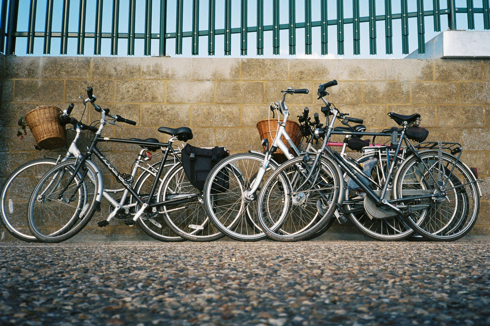

Meu Mundo de bike
O ciclismo no dia a dia
O ciclismo é umas das atividades que nos ajudam a prolongar a vida, ela pode se praticado em qualquer momento da nossa vida, como ir de bike para o trabalho, ir na casa de um amigo ou familiar, ir ao mercado fazer uma compra, passear e aproveitar a paisagem, ou quem sabe fazer uma trilha com amigos e familiares, além de nos ajudar no dia dia, além da bike ser um meio de transporte ela não polui o meio ambiente e ajudar e nos a ter uma vida mais saudável.
Benefícios de andar de bicicleta
Andar de bicicleta faz bem para a saúde, ajuda o meio ambiente e melhora a qualidade de vida. Além de ser uma forma de se exercitar, também é uma maneira de aproveitar o caminho a cada pedalada.
a bicicleta é um meio de transporte sustentável que não prejudica o meio ambiente, e basatente eficiente para se locomover,além de ser uma otima opção para praticar atividade fisica, e tem um custo beneficio otimo e uma manutenção que cabe no bolso.
Tipos de bicicletas
- Bicicleta Urbana (Casual/Passeio)
- Mountain Bike (Lazer/Trilha)
- Bicicleta de Estrada (Speed)
- Bicicleta Híbrida
- Bicicleta Elétrica (E-bike)
- Bicicleta Dobrável
